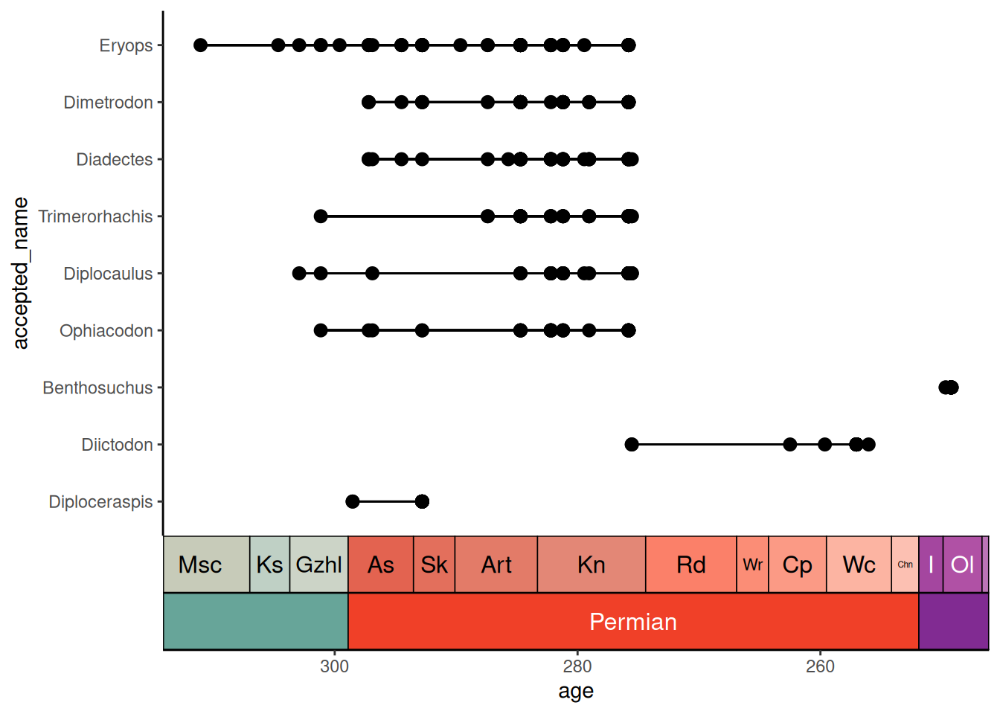
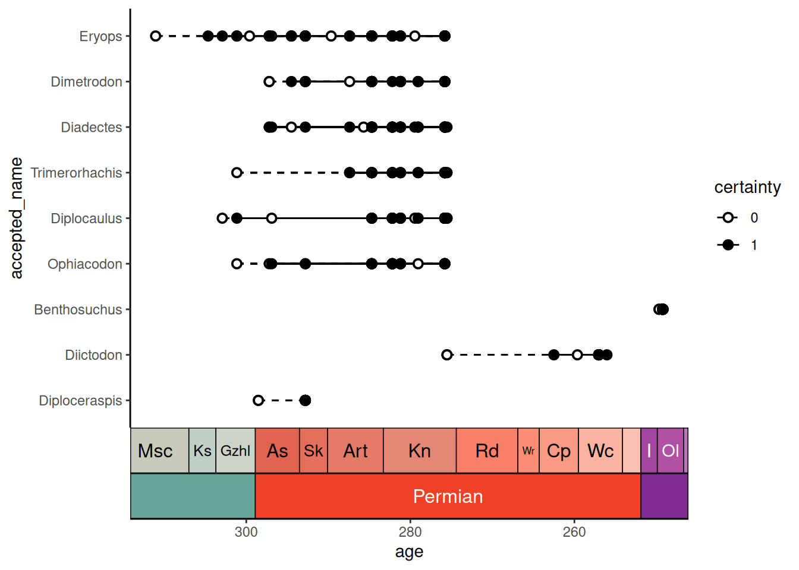
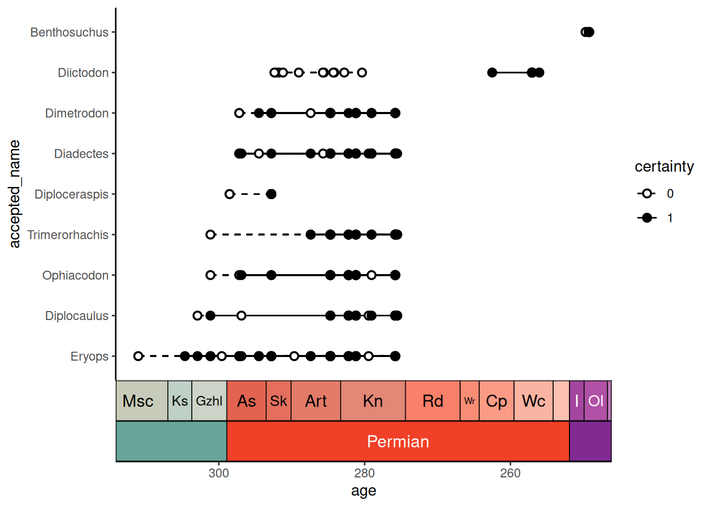

Many packages exist to visualize temporal data (e.g., geological or evolutionary biological data). deeptime similarly has a few novel ways to help you plot your temporal data in useful ways. We’ll first load some packages and example data so we can demonstrate some of this functionality.
# Load deeptime
library(deeptime)
# Load other packages
library(ggplot2)
library(dplyr)
# Load palaeoverse for tetrapod occurrence data
library(palaeoverse)
data(tetrapods)Plot occurrences through time
Do you have a bunch of temporal occurrences of taxa or some sort of
geological phenomenon, but you don’t want to go through all of the pain
of figuring out how to visualize those occurrences and their temporal
ranges? And it needs to be customizable and have a pretty geological or
stratigraphic timescale on the side? Well, then
geom_points_range() is your friend!
geom_points_range() is like
ggplot2::geom_pointrange() in that it plots points and
their ranges. However, the “raw” data that goes into
ggplot2::geom_pointrange() is the lower, upper, and the
coordinates for an individual point for each group. First, we’re too
lazy to calculate our own ranges! Second, only one point per group? But
we have a whole bunch of occurrences for each group that need to be
plotted! The difference with geom_points_range() is that
the raw data it takes in is all of your grouped temporal data. It then
does all of the work for you to plot those individual occurrences AND
the ranges of those occurrences for each group. Let’s try it out with
some Permian vertebrate occurrence data from the
palaeoverse:
# sort the occurrences from most common genera to least common genera
# assume the age is just the mean of the max and min
occdf <- tetrapods %>%
filter(accepted_rank == "genus") %>%
select(occurrence_no, accepted_name, max_ma, min_ma) %>%
mutate(accepted_name = reorder(accepted_name, accepted_name, length)) %>%
arrange(desc(accepted_name)) %>%
mutate(age = (max_ma + min_ma) / 2)
# get a reasonable subset of those occurrences
occdf <- occdf[1:300, ]
# plot those occurrences
ggplot(data = occdf) +
geom_points_range(aes(x = age, y = accepted_name)) +
theme_classic()
And then, of course, we want to add a timescale:
ggplot(data = occdf) +
geom_points_range(aes(x = age, y = accepted_name)) +
scale_x_reverse() +
coord_geo(pos = list("bottom", "bottom"), dat = list("stages", "periods"),
abbrv = list(TRUE, FALSE), expand = TRUE, size = "auto") +
theme_classic()
What if we aren’t certain about some of our data points? Maybe we don’t necessarily know if they are assigned to the correct genus or perhaps we are uncertain about their age? Fortunately, we have all of the tools of ggplot available to us! First we’ll simulate some binary “certainty” values, then we’ll plot certainty as additional aesthetics:
occdf$certainty <- factor(sample(0:1, nrow(occdf), replace = TRUE))
ggplot(data = occdf) +
geom_points_range(aes(x = age, y = accepted_name,
fill = certainty, linetype = certainty), shape = 21) +
scale_x_reverse() +
scale_fill_manual(values = c("white", "black")) +
scale_linetype_manual(values = c("dashed", "solid")) +
coord_geo(pos = list("bottom", "bottom"), dat = list("stages", "periods"),
abbrv = list(TRUE, FALSE), expand = TRUE, size = "auto") +
theme_classic()
Finally, we can sort the taxa so that they are arranged in order of their earliest occurrence:
occdf$accepted_name <- reorder(occdf$accepted_name, occdf$age, max,
decreasing = TRUE)
ggplot(data = occdf) +
geom_points_range(aes(x = age, y = accepted_name,
fill = certainty, linetype = certainty), shape = 21) +
scale_x_reverse() +
scale_fill_manual(values = c("white", "black")) +
scale_linetype_manual(values = c("dashed", "solid")) +
coord_geo(pos = list("bottom", "bottom"), dat = list("stages", "periods"),
abbrv = list(TRUE, FALSE), expand = TRUE, size = "auto") +
theme_classic()
Note that our uncertain lines (0) always overlap with our certain lines (1), so there is a continuous line spanning each taxon’s entire range. However, if we tweak some of the data, we can change that, causing a gap in the ranges. Note that in this engineered example, the uncertain and certain ranges for Diictodon no longer overlap, so there is a gap between them:
oldest_certain <- occdf %>%
filter(accepted_name == "Diictodon", certainty == 1) %>%
pull(age) %>% max()
n_uncertain <- sum(occdf$accepted_name == "Diictodon" & occdf$certainty == 0)
# make the uncertain points all much older
occdf$age[occdf$accepted_name == "Diictodon" & occdf$certainty == 0] <-
oldest_certain + runif(n_uncertain, 15, 30)
ggplot(data = occdf) +
geom_points_range(aes(x = age, y = accepted_name,
fill = certainty, linetype = certainty), shape = 21) +
scale_x_reverse() +
scale_fill_manual(values = c("white", "black")) +
scale_linetype_manual(values = c("dashed", "solid")) +
coord_geo(pos = list("bottom", "bottom"), dat = list("stages", "periods"),
abbrv = list(TRUE, FALSE), expand = TRUE, size = "auto") +
theme_classic()
However, if we want a line connecting these groups of points, we can
fix this by using the background_line argument, which can
be a list of aesthetic values to use for the background line
segments:
ggplot(data = occdf) +
geom_points_range(aes(x = age, y = accepted_name,
fill = certainty, linetype = certainty), shape = 21,
background_line = list(linetype = "dashed")) +
scale_x_reverse() +
scale_fill_manual(values = c("white", "black")) +
scale_linetype_manual(values = c("dashed", "solid")) +
coord_geo(pos = list("bottom", "bottom"), dat = list("stages", "periods"),
abbrv = list(TRUE, FALSE), expand = TRUE, size = "auto") +
theme_classic()
Finally, while I’ve showcased this geom with the use case of plotting occurrence data, note that the potential usage for this function is much broader. Basically any set of data with a categorical and a continuous variable could be visualized like this (when appropriate).
Geological timescale color scales for ggplot
You may also want to color your data based on its age.
deeptime has scale_color_geo() and
scale_fill_geo() for this very purpose! Note that currently
these scales only work with discrete data. The default behavior is for
the color/fill aesthetic values to match the names of the intervals in
dat. Here, we’ll use the coral_div_dis data from the first
vignette tutorial:
ggplot(coral_div_dis, aes(x = n, y = diet, fill = period)) +
geom_col() +
scale_fill_geo(periods) +
xlab("Coral Genera") +
ylab("Diet") +
theme_classic()